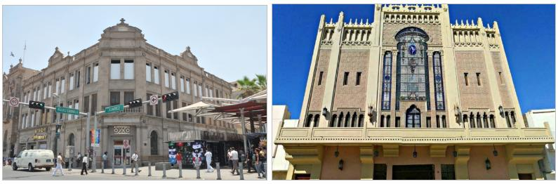
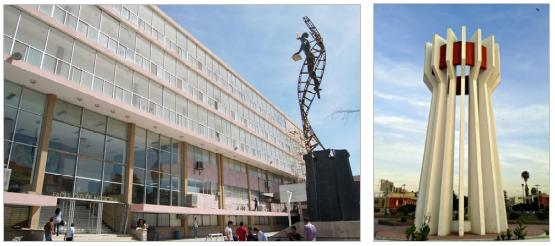
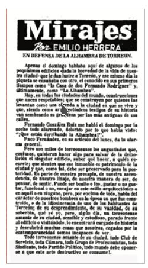
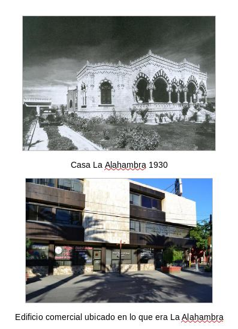
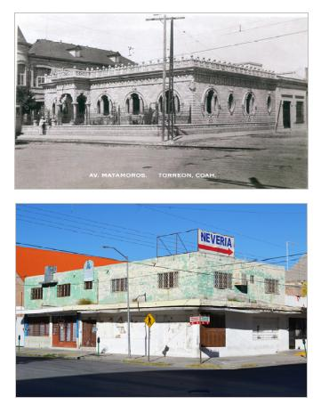

La Organización de las Naciones Unidas para la Educación, la Ciencia y la Cultura (UNESCO) define el patrimonio como el legado cultural que recibimos del pasado, el cual vivimos en el presente y, en su momento, transmitiremos a las generaciones futuras. El patrimonio inmueble engloba estos aspectos, pero en este caso, se trata de producciones humanas que no pueden ser trasladadas, tales como; obras de la arquitectura civil, religiosa, militar, doméstica, industrial, calles, puentes, entre otros elementos que reflejan el legado cultural de nuestros ancestros.
A pesar de que el concepto de patrimonio fue concebido bajo un contexto europeo, en nuestro país existen una serie de instituciones que se dedican a salvaguardar los componentes que conforman el patrimonio nacional que se encuentra distribuido entre las ciudades mexicanas.
En primer lugar, se encuentra el Instituto Nacional de Antropología e Historia (INAH), que, desde su fundación en 1939, se ha dedicado a coordinar y regular las labores de conservación y preservación del patrimonio histórico del país. Años después, surge, en 1946, lo que hoy conocemos como Instituto Nacional de Bellas Artes y Literatura que trabaja en conjunto con el INAH para gestionar el cuidado, estudio y catalogación de patrimonio cultural mexicano, así como estimular y promover la creación del arte y la cultura mexicana.
Actualmente, en Torreón existen 173 inmuebles catalogados como elementos de valor patrimonial, de estos, 48 pertenecen al INAH, 92 al INBAL y 33 catalogados por ambos institutos, entre los cuales destacan:
Archivo Municipal
Hotel Galicia
Edificio Arocena
Hotel Salvador
Casa Mudéjar
Antigua Presidencia Municipal
Banco Chino
Casino de La laguna
Hotel Princesa
Teatro Isauro Martínez
Banco de La Laguna

Por su parte, el municipio ha clasificado otra serie de inmuebles cuyas características poseen valor arquitectónico y social que reflejan la identidad de la ciudad, estos inmuebles son; la Facultad de Medicina UA de C, la Puerta Amarilla, monumento al Torreón, escultura Torreón al Porvenir, Teatro al aire libre en la avenida Allende, el Reloj de Sol de la colonia Torreón Jardín y un grupo de casas-habitación ubicadas principalmente en la zona centro.

Considerando que, se trata de una ciudad de conformación reciente, Torreón es un caso único en el desarrollo urbano del país, pues a diferencia de otras ciudades mexicanas fundadas en la colonia, la ciudad lagunera es resultado de la conformación urbana que creció en base al trazado del ferrocarril en la época revolucionaria (Herrera, 2009).
Las características arquitectónicas de estos edificios representan una apropiación de la cultura mexicana, combinado con un modelo de ciudad ferroviario del suroeste norteamericano.
No obstante, la UNESCO (1972) manifestó que el patrimonio se encuentra constantemente amenazado, ya que en muchas ocasiones se destruye lo antiguo para dar paso a lo nuevo, convirtiéndolo en víctima del deterioro, el abandono y en algunos casos la destrucción del mismo. El caso de Torreón no es diferente ya que, durante los últimos años se han demolido una gran cantidad de edificios históricos que han sido remplazados por estacionamientos, comercios, bodegas y otras edificaciones sin ningún tipo de interés social, estético o cultural.

Un ejemplo de esto es lo que ocurrió con la “Casa Alhambra”, cuyas propiedades arquitectónicas representaban, de la mejor manera, una prudente combinación entre el estilo mudéjar y la arquitectura de la región, dando como resultado un lugar que se convertiría en un emblema de la ciudad, el museo Arocena (2016) indica que, los torreonenses expresaban su admiración y reconocimiento por la llamada popularmente “Casa Morisca”.
Incluso se tuvo la intención de crear un instituto de cultura ubicado en el inmueble, pero no se recabaron los recursos suficientes, la casa se encontraba en peligro de desaparecer, y los ciudadanos expresaron su angustia por salvarla, en los periódicos locales se podía leer: “Es parte de nuestra prosapia, de nuestra ascendencia, de nuestro linaje, de nuestra manera de ser, de pensar y de sentir…pero por encima de todo, habla del carácter de nuestros hombres en la época en que fue construido.” Lamentablemente, en 1981, a pesar de la indignación y protestas de los ciudadanos, la casa fue destruida para dar paso a una nueva construcción.

Otro caso similar es el de la casa habitación antiguamente ubicada en la avenida Matamoros y calle Cepeda, con delicados ornamentos y arcos de herradura, fue que se llevó a cabo esta edificación, también fue destruida, en su lugar se construyó un edificio de carácter comercial.

Hasta este año, han desaparecido un total de 24 inmuebles con valor patrimonial, mientras que otros 65 se encuentran en mal estado. La pérdida de los inmuebles patrimoniales significa una pérdida de la historia e identidad de nuestra ciudad, el Dr. Luis Arnal Simón, profesor investigador de la UNAM, menciona que: “si no se protege el patrimonio, se pierde la memoria y al hacerlo se pierde una parte de nosotros.”
Ante esta situación, se han implementado una serie de instrumentos normativos que buscan promover y beneficiar la protección de los edificios con valor patrimonial, como lo son la Ley Federal sobre monumentos y zonas arqueológicos, artísticos e históricos, así como el Reglamento de protección y conservación del conjunto histórico y patrimonio construido del Municipio de Torreón, Coahuila, este último remarca la importancia de proteger los elementos de valor artístico, arquitectónico e histórico de la ciudad.
Además, las instituciones municipales han trabajado en el rescate, la rehabilitación y conservación de inmuebles y monumentos que son parte del patrimonio cultural y arquitectónico de los torreonenses, un ejemplo de esto es la Casa Mudéjar, la fachada del Perpetuo Socorro, el Hotel Galicia, entre otros.
Así mismo, el IMPLAN se encuentra realizando el Programa Parcial de Desarrollo Urbano del Centro Histórico de Torreón, que tiene, como uno de sus objetivos principales, proteger y mejorar las condiciones de los inmuebles patrimoniales y zonas culturales de diferentes épocas o periodos de la ciudad, para lograrlo se propone:
Rescatar y salvaguardar el patrimonio arquitectónico mediante un organismo que fomente su protección y mantenimiento.
Promover y difundir el conocimiento del patrimonio y su preservación entre la comunidad.
Establecer normas para hacer efectiva la conservación del patrimonio.
Aumentar el número de inmuebles catalogados por las instituciones federales.
Incentivar el uso de los inmuebles catalogados, siempre y cuando se respeten sus características arquitectónicas.
Proyectos de reactivación y mejoramiento de inmuebles patrimoniales como lo son la Antigua Harinera, la estación de autobuses San Pedro.
Sin embargo, aunado a esto, es importante acercar a la ciudadanía una correcta articulación entre lo antiguo y lo moderno, tomando en cuenta que, la conciencia del patrimonio no es la misma uniformemente en toda la población, existirán factores que influyan en grupos específicos, generando una mayor o menor familiaridad con el valor histórico, estético y social de los inmuebles. Ciardini & Falini (1980) mencionan que, el inmueble patrimonial que adquiere un interés público, permite continuar con el desarrollo y las tradiciones de un grupo humano.
Estas estrategias, en conjunto con la capacidad de responder a las necesidades actuales y futuras de la población, respetando el contexto histórico, permitirá desarrollar la cultura de la conservación del patrimonio, lo cual es indispensable para la identidad de los laguneros.
Bibliografía
Campos, M. Á. (22 de agosto de 2020). Rescata Municipio edificios y monumentos históricos. El Sol de la Laguna.
Ciardini, F., & Falini, P. (1980). I centri storici, planning & design. Milan: Gabriele Mazzota.
Gobierno de México. (1972). Ley Federal de monumentos y zonas arqueológicos, artísticos e históricos.
Herrera, L. (2009). Anatomía de la Memoria. En El patrimonio construido en el Conjunto Histórico de Torreón (pág. 85). Buenaval.
Meyers, W. (1994). Forge of Progress, Crucible of Revolt; Origins of the Mexican Revolution in La Comarca Lagunera 1880-1911. Albuquerque: University of New Mexico Press.
Museo Arocena. (s.f.). Recuerdos de la Alahambra. Arquitectura oriental en Torreón. Obtenido de https://museoarocena.com/exhibiciones/exhibicion-actuales/66-espanol/exhibiciones/exhibiciones-pasadas-2016-2017/258-recuerdos-de-la-alhambra-arquitectura-orientalista-en-torreon
Reglamento de protección y conservación del conjunto histórico y patrimonio construido del Municipio de Torreón, Coahuila.
UNESCO. (1972). Convención sobre la protección del patrimonio mundial, cultural y natural. París